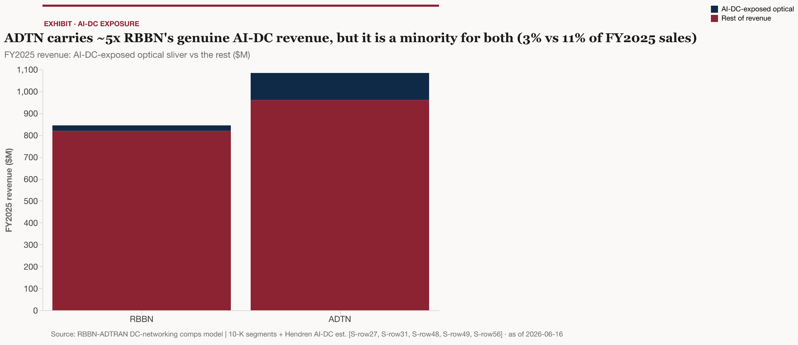
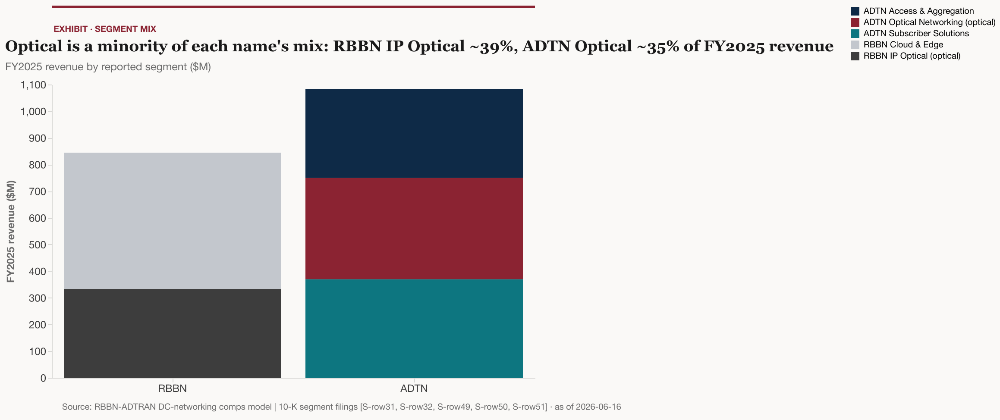

Buy-side deeper-report · comparative two-name coverage · neutral survey · 2026-06-16
The central question. Are RBBN and ADTN cheap tier-2 optical names with real AI–data-center (AI-DC) interconnect optionality the market is missing — or correctly-discounted sub-scale vendors whose AI-DC exposure is too small, and whose risks too large, to matter?
Terms used in this note (defined on first use): DCI — data-center interconnect, the optical links that carry traffic between (and increasingly within) data centers. ZR / ZR+ — industry standards for coherent pluggable optics (transceivers that plug directly into routers/switches), with 400ZR, 800ZR and ZR+ denoting capacity/reach variants. Coherent pluggable — a coherent optical transceiver in a pluggable form factor that lets a router host the optics directly. Scale-across — interconnecting AI data centers across metro/regional distances so multiple sites act as one training fabric. MOFN — Managed Optical Fiber Network, where a hyperscaler contracts a carrier to build/operate optical capacity on its behalf. DPLTA — Domination and Profit-and-Loss Transfer Agreement, the German corporate instrument governing ADTRAN’s control of its Adtran Networks SE subsidiary and the minority squeeze-out. SOTP — sum-of-the-parts valuation.
The evidence-led answer: both are correctly-discounted sub-scale tier-2 optical/access vendors with real but minority AI-DC optionality — not a missed AI re-rating. ADTN has the stronger claim of the two; neither is thesis-grade AI exposure.
The starting point is scale, and it is unflattering for both. Neither Ribbon nor ADTRAN appears in any optical-systems leader tier: on a trailing-four-quarter basis through Q1 2026, Huawei, Ciena, Nokia (including Infinera) and ZTE held more than 80% of optical transport systems revenue between them, and for the ZR/ZR+ IPoDWDM segment the lead vendors are Marvell and Cisco/Acacia — neither RBBN nor ADTN is named 12. Each company’s optical franchise runs at roughly $0.33–0.38B annually versus Ciena’s ~$5.6B, i.e. about one-fifteenth the scale 334. A separate sell-side interconnect tiering (Bernstein, 97pp) names component/DSP leaders and neither of these two 5. Three independent reads place both firmly in the tier-2 challenger band.
AI-DC exposure is real but a minority of each name, and is more product-positioning than booked revenue. On the model’s analytic build-up, RBBN carries ~$25.0M of AI-DC-exposed revenue (~3.0% of FY2025 sales) and ADTN ~$123.6M (~11.4%) — ADTN roughly 4.9x RBBN. RBBN discloses no data-center revenue line at all, so its figure is inferred small 6; ADTN’s larger number is grounded in a cloud/enterprise mix that the company does disclose (21% of FY2025 revenue), optical growth its management attributes to cloud data-center capacity, and an explicit subsidiary-level “AI data centers” attribution 7789. Both companies’ AI framing leans on product launches and reference customers rather than disclosed AI revenue 1011.
The AI re-rating accrued almost entirely to the scale leader. Ciena trades at roughly 11.6x EV/Sales; RBBN at ~1.0x and ADTN at ~1.2x got none of it 34121212.
On the relative call within a neutral survey: ADTN has the stronger claim — more genuine AI-DC exposure, faster optical growth (+26.4% YoY), and a deleveraging turnaround — but it carries the DPLTA squeeze-out overhang, up to ~€304.4M/$351.7M if all minorities elect, per the Q1 2026 10-Q 8713. RBBN is cheaper but more levered, with a May-2026 covenant waiver and near-zero demonstrated AI-DC traction (zero named hyperscaler wins in FY2025) 146. Neither is a pure-play AI-interconnect bet; both are optionality-with-baggage 567148.
The Street prices both as cyclical sub-scale hardware vendors, not AI beneficiaries — and that is the variant the bull case must exploit. Ciena’s ~165% year-to-date move and ~11.6x multiple sit on a verified $5.57B top line growing ~30.6% YoY 154. RBBN and ADTN lack a comparable disclosed AI revenue line 6, and only ADTN shows a demonstrably cloud/DC-driven optical mix 7.
So the honest variant is narrow: the market may be under-crediting ADTN’s demonstrated optical pull, not that it has mispriced a hidden AI franchise at either name. A re-rating toward the leader’s multiple would require disclosed AI-DC revenue that the filings do not yet show. The valuation gap is the opportunity; the exposure reality only partly supports closing it 3476.
RBBN. Optical is the minority of the company. IP Optical Networks generated $333.1M in FY2025 (~39% of the $844.6M total); the larger Cloud & Edge segment ($511.4M, ~61%) is voice/UC modernization with no data-center linkage 16163. Even a fully successful optical story addresses under 40% of Ribbon. The Apollo platform’s AI-DC capability is real — 800G ZR+ scaling to 1.2T coherent, Scale-Across, a distinctive “Rural DCI” angle targeting 67% of US DCI growth via cross-sell to the rural telco installed base — but it is positioned at Tier-1/Tier-2 service providers, not sold direct to hyperscalers 1718. The capability is architecturally credible; the channel is mismatched to where hyperscaler spend lands.
ADTN. Optical is the largest and fastest-growing product family: $380.3M in FY2025, +26.4% YoY, with Q4 optical up 33% YoY that management attributes to cloud providers expanding data-center capacity plus enterprise upgrades 87. The other two families are broadband-access-oriented and grew on telco demand: Subscriber Solutions $369.1M (+11.6%) and Access & Aggregation $334.4M (+14.9%) 88. The 10-K explicitly frames the business around metro optical transport, DCI and broadband access, and names hyperscalers, neocloud and data-center companies in its customer base 8. The optical line is the single best-evidenced AI-DC linkage in the pair.
The exposure cannot be pinned precisely, and the imprecision cuts both ways. ADTN’s enterprise+cloud-provider mix was 21% of revenue in FY2025 (25% in Q4) — but that blends large non-AI enterprise (e.g. banking), so it overstates AI-DC; meanwhile MOFN demand (hyperscalers contracting carriers to build for them) books as carrier revenue, so direct hyperscaler pull is split across lines and understated 77. The model’s ~11.4% is therefore the midpoint of a wide range, not a disclosed figure. A second, smaller thread: the Oscilloquartz timing portfolio offers a niche GPS/GNSS-independent timing angle for data centers, but it sits in Access & Aggregation, not Optical, and is unsized 8.

For context on how much of each name is even optical:

The demand backdrop is genuine and large. Optical transport equipment grew to $16B in 2025 (+10%) and is forecast to surpass $18B in 2026 (+16%), DCI-led, with DCI growing roughly twice the overall market and 800ZR/ZR+ pluggables exceeding $1B of revenue in 2026 192021. The opportunity is real; the open question for tier-2 vendors is reach, not size.
Two structural forces work against that reach. First, the architecture itself is shifting under them: cloud operators have made router-hosted coherent pluggables their default DCI architecture, shifting an estimated ~$2.5B out of traditional optical transport in 2024 alone 2221. That fault line both displaces the chassis transport RBBN and ADTN historically sold and forces them to compete as pluggable hosts on someone else’s silicon. Second, the scale leaders are consolidating up into the wave: Nokia closed Infinera in February 2025, creating a >$3.6B optical business 21. The scale gap is widening, not narrowing.
The outside-in read confirms the inside-out one: sell-side interconnect coverage tiers the investable set around component and DSP leaders (Coherent, Lumentum, Fabrinet, Corning) and names neither RBBN nor ADTN 5. The market’s neglect looks considered, not an oversight.
RBBN — flat top line, weak earnings quality. FY2025 revenue was $844.6M (+1.3%) 23 with non-GAAP gross margin compressing to 52.3% (from 55.9%) 23, a GAAP operating loss of $(3)M 23, and adjusted EBITDA down to $107M 23. The headline GAAP net income of $39.6M is tax-benefit-driven, not operating — the reader should not mistake it for earnings power 23. The balance sheet is workable but thin: total debt of $405.1M (term debt plus finance leases) against $96.4M of cash, leaving the $308.7M net-debt figure that frames the leverage discussion below 2424. The FY2026 guide is modest and back-half weighted: revenue $840–875M (midpoint $857.5M, ~+1.5%), gross margin 52.5–53.5%, adjusted EBITDA $105–120M, with IP Optical guided to ~5% growth driven by India/EMEA telco and BEAD broadband subsidies — explicitly not hyperscaler AI-DC 23236. The Q4 IP Optical line actually declined 2% YoY and US Federal revenue roughly halved, framing the caution 66.
ADTN — real turnaround on non-GAAP/cash, unproven on GAAP. FY2025 grew 17.5% to $1,083.8M, with the non-GAAP operating margin swinging to +4.8% (from -0.3%) and free cash flow up 58% to $60.5M 877. GAAP gross margin also improved to 38.3% (from 35.1%), evidence the mix/cost work is reaching the P&L 8. But the company remained GAAP loss-making: operating loss $(15.6)M, net loss $(45.7)M — narrowed sharply from 2024’s impairment-driven losses, yet still red 88. ADTN gives only Q1‘26 guidance ($275–295M, non-GAAP operating margin 4–8%) and no full-year 2026 guide; the Q4‘25 exit-rate was strong (revenue +20.1%, a sixth consecutive sequential-growth quarter), though component supply (memory/optics) is a flagged risk 2525. The short book-to-ship and absent FY guide are themselves earnings-quality signals. Both names run heavy R&D (RBBN ~21.8% of revenue, ADTN ~18.4%) and ADTN’s trailing ROE is still negative (~-24%) on the GAAP losses — consistent with the picture above and not separately load-bearing 121212.
On the comparable set, RBBN (0.97x EV/Sales) and ADTN (1.25x) trade far below access peer Calix (2.26x) and the AI-optics beneficiaries Coherent (10.13x) and Ciena (11.63x) 1212123. RBBN’s and ADTN’s multiples here are computed on FY2025 revenue (the model basis); on the trailing-twelve-month basis used for the peer figures they screen marginally higher, at 0.99x and 1.21x respectively 1212.
| Name | EV/Sales (x) | EV/EBITDA (x) | Market cap |
|---|---|---|---|
| Ribbon (RBBN) | 0.97 | 18.19 12 | ~$490M |
| ADTRAN (ADTN) | 1.25 | 12.89 12 | ~$1,223M |
| Calix (CALX) | 2.26 12 | 36.47 12 | ~$2,440M 12 |
| Coherent (COHR) | 10.13 12 | 57.65 12 | ~$65,060M 12 |
| Ciena (CIEN) | 11.63 12 | 97.54 12 | ~$64,210M 12 |
EV/Sales basis: RBBN and ADTN computed on FY2025 revenue (model); Calix, Coherent and Ciena on FMP trailing-twelve-month. The two bases differ only marginally for the tier-2 names (RBBN 0.97x vs 0.99x TTM; ADTN 1.25x vs 1.21x TTM) and do not affect the comparison.
The EBITDA multiples carry less signal than EV/Sales here. RBBN’s (18.19x) and the peers’ optically high readings — Ciena 97.54x, Coherent 57.65x — sit on depressed or fast-growing EBITDA denominators, and for RBBN the GAAP/non-GAAP EBITDA-basis issue noted below applies. A sales-multiple comparison is therefore the cleaner lens for the re-rating question 121212.
An illustrative sum-of-the-parts — valuing the AI-DC sliver at 10x sales (in line with where the scale leaders Coherent and Ciena trade, ~10–12x) and the rest at 1x — implies a +30.4% enterprise-value uplift for RBBN and +62.2% for ADTN 1212. This is indicative of the embedded optionality, not a price target: ADTN’s larger sliver drives the bigger gap.
Leverage colors the equity read. RBBN’s net debt is $308.7M, roughly 2.9x adjusted EBITDA, versus ADTN’s ~$125M, roughly 1.24x 2412. Note a data conflict worth flagging: FMP reports RBBN net-debt/EBITDA at 7.33x, but that is computed on a GAAP/trailing-EBITDA basis that does not reconcile to the ~2.9x on FY2025 adjusted EBITDA of $107M 23 and net debt of $308.7M — the model adopts the ~2.9x adjusted-EBITDA basis as primary and treats the 7.33x as the FMP-basis artifact 1224. The corrected read still leaves RBBN the more-levered of the two, and its cheaper sales multiple is partly a more-levered balance sheet rather than pure neglect.
ADTN. Bull: demonstrated cloud/DC optical pull continues (Q4 optical +33%) and the EMEA Huawei-replacement opportunity (~$850–860M of annual EMEA Huawei spend in ADTN’s target products, on management’s estimate) converts to share 77. Bear: the DPLTA exit cash drain crystallizes while a GAAP-loss relapse returns 138. RBBN. Bull: the nascent DCI wins become disclosed revenue. Bear: flat optical, federal softness and covenant pressure compound 6614. The asymmetry favors ADTN on demonstrated traction, but with a larger discrete cash claim (DPLTA) standing against it.
Soft (product/reference, no disclosed AI revenue): ADTN’s LiteWave800 — its first product purpose-built for intra-data-center AI infrastructure (800G), with volume production roughly a year out — and a quantum-safe optical narrative; RBBN’s Q1‘26 “several new Data Center Interconnect wins” (no DCI revenue disclosed) and an AWS Strategic Collaboration Agreement 26101127. The path to a re-rating runs through disclosed AI revenue that does not yet exist.
Hard (dated, testable): ADTN’s Q1‘26 print already landed ($286.1M, +15.5%; optical $237.9M) and DPLTA appraisal proceedings are live; RBBN’s Q1‘26 already showed revenue down 10% to $163M with negative adjusted EBITDA of $(8)M and a May-2026 covenant waiver 26271314. The next earnings prints, covenant tests and the appraisal outcome are the events that move the names.
For the bull case (would convert optionality to thesis-grade): a named hyperscaler or neocloud optical design win with disclosed AI-DC revenue at either name. RBBN named zero such wins in FY2025; ADTN names hyperscalers in its customer base but discloses no AI-DC revenue line 6867. A disclosed win or revenue line would flip the call.
Against (would confirm the discount): the router-hosted pluggable shift accelerating faster than DCI wins replace the displaced systems/chassis revenue both depend on. RBBN’s flat-to-declining IP Optical (Q4 -2%) is the early tell 22621.
RBBN. Market cap ~$489.7M, enterprise value ~$820.4M, share ~$2.78, consensus price target $3.50 12121212. The term loan matures in 2029 at SOFR+6.25% — no maturity wall — but a May-2026 covenant waiver (raising max net leverage to 4.50x, stepping to 4.00x) makes leverage headroom the binding single-name risk, alongside high-cost floating-rate debt 2814.
ADTN. Market cap ~$1,223M, enterprise value ~$1,353.8M, share ~$15.10, consensus price target $18.00 12121212. ADTRAN owns just over 70% of Adtran Networks SE; the DPLTA squeeze-out gives minorities a €17.21/share cash put, aggregating up to ~€304.4M/$351.7M if all elect, per the Q1 2026 10-Q (including guaranteed interest, at the 3/31/26 exchange rate) — and German appraisal proceedings could raise it. Funded debt is ~$201.3M of 3.75% convertibles due 2030 plus a $25M revolver 138. The DPLTA claim, against an otherwise improving balance sheet, is the binding single-name risk.
The optical exposure lives in a specifically-named subsidiary the reader can track: Adtran Networks SE (ex-ADVA, Munich), which houses the FSP 3000 platform and AOE coherent pluggables, grew FY2025 group revenue 10% to €481.7M and explicitly attributes demand to an “unprecedented investment boom in AI data centers” — the strongest filing-grade AI linkage in the pair, though framed largely via service-provider transport rather than direct hyperscaler sales 99.
Implementation/sizing. Both are small-cap and sub-scale; RBBN’s micro-cap size and covenant overhang argue for the smaller position if either is taken, while ADTN’s larger float and cash generation give it the cleaner balance sheet net of the discrete DPLTA claim.
Full provenance — source URLs, document types, publication dates and confidence — lives in the findings sidecar: /Users/johnhendren/Desktop/Projects/vault/raw/research-2026-06-16-rbbn-adtran-dc-networking/findings.jsonl (S001–S087). Derived valuation figures (AI-DC-exposed revenue estimates, the illustrative SOTP uplift, comps) tie to the model /Users/johnhendren/Desktop/Projects/vault/kb/outputs/models/rbbn-adtran-dc-networking-comps_v1_2026-06-16.xlsx.
Key primary sources cited above include: RBBN and ADTN FY2025 results and 10-K filings [S027–S054]; RBBN and ADTN Q1‘26 results 2726; Adtran Networks SE FY2025 annual report 99; the ADTRAN Q1 2026 10-Q (current DPLTA Exit Compensation) 13; Dell’Oro and Cignal AI optical/DCI market forecasts [S069–S071]; FMP market-data snapshots and stockanalysis.com Ciena verification [S001–S026][S081–S084]; and Bernstein interconnect coverage 5.
trade-press “On a trailing-four-quarter basis through Q1 2026, the top optical transport systems vendors holding over 80% combined revenue share were Huawei, Ciena, Nokia (incl. Infinera), and ZTE; for IPoDWDM ZR/ZR+ specifically the lead vendors were Marvell and Cisco/Acacia. Neither Ribbon nor ADTRAN appears in the leader tier, placing both as sub-scale tier-2 challengers in systems optical / DCI.”, 2026-05-01 · local: 2026-06-11-delloro.com-c8237202-clean.md · Trade press ↩↩
www.sec.gov “Nokia closed its acquisition of Infinera on Feb 28, 2025 (~$2.3B equity, $6.65/sh), creating an optical business with >$3.6B turnover; Q1 2026 Optical Networks net sales were EUR 821M (+20% constant-currency/portfolio), AI & Cloud sales +49%, with EUR 1B of AI & Cloud orders. Scale leaders are consolidating UP into the AI-DC interconnect wave while RBBN/ADTN remain sub-$0.4B optical run-rates.”, 2025-02-28 · https://www.sec.gov/Archives/edgar/data/1138639/000119312525041368/d847449d8k.htm · local: 2026-06-09-nokia-infinera-acquisition-close.md · Primary ↩↩
primary-filing “Ribbon's IP Optical Networks segment (the unit housing its DCI/coherent products, ex-ECI) generated $333.1M of FY2025 revenue (vs $328.7M FY2024) — roughly flat and only ~$0.33B annualized. Against scale leaders Ciena (~$5.6B) and Nokia Optical (>$3.6B), this confirms RBBN's optical franchise is an order of magnitude sub-scale in the AI-DC interconnect race.”, 2026-02-01 · local: 2026-06-16-fmp-market-data-rbbn-adtn-peers.md · Primary ↩↩↩↩↩↩
stockanalysis.com “Ciena's TTM revenue is $5.57B (+30.6% YoY) as of 2026-06-16, with FQ2 FY2026 (ended May 2, 2026) revenue of $1.57B (+40% YoY), cloud providers at 46% of revenue, an order backlog of $7.7B, and FY2026 revenue guidance raised to $6.3B (+32% at midpoint). This is the verified revenue denominator behind the ~11.6-11.8x EV/Sales — a genuinely fast-growing, AI-DC-interconnect-driven top line, which is what licenses (rightly or not) the premium multiple.”, 2026-06-16 · https://stockanalysis.com/stocks/cien/ · local: 2026-06-16-stockanalysis.com-ciena-valuation.md · news-aggregator ↩↩↩↩
Noldor: futunn bernstein 97pp interconnect summary “Bernstein's 97pp interconnect coverage tiers the optical/interconnect supplier set around component leaders (Coherent, Lumentum, Fabrinet, Corning) and DSP/module leaders; neither Ribbon nor ADTRAN is named in its interconnect investability tiers — corroborating from a sell-side lens that both are off-radar as AI-DC interconnect plays.”, 2026-05-25 · Noldor: futunn bernstein 97pp interconnect summary · local: 2026-05-19-futunn-bernstein-97pp-interconnect-summary.md · Sell-side ↩↩↩↩
www.investing.com “RBBN does not disclose any data-center / hyperscaler revenue split for IP Optical; DC interconnect is product-marketing positioning not a quantified revenue stream”, 2026-02-26 · https://www.investing.com/news/transcripts/earnings-call-transcript-ribbon-communications-q4-2025-earnings-beat-expectations-93CH-4489160 · local: 2026-06-16-investing-com-rbbn-q4-2025-transcript.md · earnings-transcript ↩↩↩↩↩↩↩↩↩↩↩↩↩
www.marketscreener.com “Enterprise + cloud providers as a share of total revenue in FY2025 (full-year); 25% in Q4 2025 specifically — the best filing-grade proxy for AI-DC/cloud exposure of ADTN's mix”, 2026-02-26 · https://www.marketscreener.com/news/adtran-fourth-quarter-2025-transcript-ce7e5cdfdc8cf221 · local: 2026-02-26-marketscreener.com-adtn-q4-2025-transcript.md · earnings-transcript ↩↩↩↩↩↩↩↩↩↩↩↩↩↩
“10-K explicitly frames the business around metro optical transport, data center interconnect and broadband access, and names hyperscalers, neocloud and data center companies among its customer base”, 2026-02-26 · /Users/johnhendren/Desktop/Projects/vault/raw/noldor-research/sec-filings/adtran-holdings-inc-10-k-2026-02-26-2026-02-26.md · local: adtran-holdings-inc-10-k-2026-02-26-2026-02-26.md · Primary ↩↩↩↩↩↩↩↩↩↩↩↩↩↩↩
www.eqs-news.com “SE annual report attributes optical-transport demand growth to an 'unprecedented investment boom in AI data centers'; DCI6 + edge architectures enable the low-latency/high-bandwidth environment required for AI infrastructure”, 2026-03-30 · https://www.eqs-news.com/media/document/3ee29967-3d35-4a88-b5f4-b4f98f69b908/assets/DE0005103006-JA-2025-EQ-E-00.pdf · local: 2026-03-30-adtran-networks-se-fy2025-annual-report.md · Primary ↩↩↩↩↩
www.sec.gov “Trade press has begun connecting ADTRAN to the AI-DC interconnect theme via LiteWave800 (intra-DC AI infrastructure, 800G) and quantum-safe optical transport for AI data-center connectivity, with a late-May 2026 share spike on AI-adjacent momentum. The narrative exists but is early and product-launch-driven, not backed by disclosed AI-DC revenue — consistent with ADTN as an aspirational tier-2 entrant rather than a proven scale-across supplier.”, 2026-05-27 · https://www.sec.gov/Archives/edgar/data/926282/000119312526204995/adtn-ex99_1.htm · local: 2026-05-XX-sec-gov-adtn-q1-2026-8k-ex991-litewave.md · Primary ↩↩
www.prnewswire.com “Ribbon has publicly tied itself to the AI-DC interconnect wave: Q1 2026 'several new DCI wins' across Europe/US/Asia, a high-density low-power DCI deployment for an AI cloud contact-center customer, and an AWS Strategic Collaboration Agreement for cloud-native comms — set against the broader ~10x rise in ZR+ interest. The connection is real but small-scale and reference-customer-driven; no disclosed AI-DC revenue and a negative Q1 adjusted EBITDA temper any AI-beneficiary re-rating thesis.”, 2026-04-29 · https://www.prnewswire.com/news-releases/ribbon-supercharges-diabolocoms-ai-powered-cloud-contact-center-software-with-high-density-low-power-data-center-interconnect-302328575.html · local: 2026-06-16-prnewswire.com-ribbon-q1-2026.md · Trade press ↩↩
FMP API snapshot 2026-06-16 “CIEN EV/Sales (TTM)”, 2026-06-16 · FMP API snapshot 2026-06-16 · local: 2026-06-16-fmp-market-data-rbbn-adtn-peers.md · other ↩↩↩↩↩↩↩↩↩↩↩↩↩↩↩↩↩↩↩↩↩↩↩↩↩↩↩↩↩↩↩↩↩↩↩↩↩
www.sec.gov “Current aggregate DPLTA Exit Compensation (incl. guaranteed interest) if all Adtran Networks minorities elect the put, per the Q1 2026 10-Q (interest accrued through and FX as of 2026-03-31); supersedes the FY2025 10-K's $357.0M figure”, 2026-05-01 · https://www.sec.gov/Archives/edgar/data/0000926282/000119312526205276/adtn-20260331.htm · local: 2026-05-XX-sec-gov-adtn-10q-q1-2026-dplta.md · Primary ↩↩↩↩↩
www.stocktitan.net “RBBN obtained a May 2026 covenant waiver raising max net-leverage to 4.50x then 4.00x — leverage is a live pressure point despite ~2.9x adj-EBITDA net leverage”, 2026-05-05 · https://www.stocktitan.net/sec-filings/RBBN/10-q-ribbon-communications-inc-quarterly-earnings-report-a94df8a88022.html · local: 2026-06-16-ribbon-385m-credit-facility-leverage-waiver.md · Primary ↩↩↩↩↩
invezz.com “Ciena is up ~165% YTD 2026 (through 2026-06-03), part of a broad optics re-rating, yet on 2026-06-04 shares fell ~15-20% intraday despite an FQ2 beat and an FY2026 guidance raise — evidence the market now requires beats materially above already-elevated expectations. BofA upgraded to Buy (PT $355) calling a possible super-cycle to 2027; post-FQ2 price targets ranged $450-720. Confirms the multiple is investor-driven momentum, not a stale or erroneous data feed.”, 2026-06-04 · https://invezz.com/news/2026/06/04/ciena-stock-sinks-despite-earnings-beat-as-investors-seek-bigger-ai-upside/ · local: 2026-06-10-invezz-ciena-optical-ytd-2026-moves.md · news-aggregator ↩
FMP revenue-product-segmentation (from 10-K filed 2026-02-26, CIK 0001708055) “RBBN IP Optical Networks segment FY2025 revenue”, 2026-02-26 · FMP revenue-product-segmentation (from 10-K filed 2026-02-26, CIK 0001708055) · local: 2026-06-16-fmp-rbbn-segments-balancesheet-fy2025.md · Primary ↩↩
ribboncommunications.com “RBBN Apollo optical AI-DC capability is real (800G ZR+ to 1.2T coherent, Scale-Across, Rural DCI) but positioned at service providers, not a direct hyperscaler optical supplier”, 2026-06-08 · https://ribboncommunications.com/products/service-provider-products/apollo-optical-networking · local: 2026-06-08-ribbon-ECI-apollo-fy2025-dci.md · investor-presentation ↩
investors.ribboncommunications.com “RBBN Rural DCI strategy targets 67% of US DCI growth in rural areas via cross-sell to rural telecom installed base — a telco-adjacency play, not hyperscaler core-DC”, 2026-06-08 · https://investors.ribboncommunications.com/static-files/f4b751a8-2c75-4754-863f-a506dab627e8 · local: 2026-06-08-ribbon-ECI-apollo-fy2025-dci.md · investor-presentation ↩
www.delloro.com “Dell'Oro forecasts the optical transport equipment market to grow 16% in 2026, surpassing $18B for the first time since 2000, with the recovery driven by AI data-center DCI demand (it reached $16B in 2025, +10% YoY, also DCI-led); DCI specifically grows at roughly twice the overall market rate. This is the demand backdrop for the AI-DC interconnect / scale-across opportunity that RBBN and ADTN address at the systems layer.”, 2026-05-19 · https://www.delloro.com/news/optical-transport-equipment-market-forecast-to-grow-16-percent-in-2026/ · local: 2026-06-09-delloro-optical-transport-16pct-2026.md · Sell-side ↩
trade-press “Cignal AI (July 2025) forecasts over 200,000 shipments of 800ZR/ZR+ coherent pluggable modules in 2026 with revenue exceeding $1B (implied blended ASP ~$5,000), driven by hyperscaler AI scale-across DCI demand; coherent pluggables now lead the coherent market in deployed bandwidth and growth. Frames the demand pull for the 800G-1.6T interconnect category.”, 2025-07-28 · local: 2026-06-11-cignal.ai-4b148f1c.html · Trade press ↩
www.delloro.com “Dell'Oro forecasts IPoDWDM (router/switch-hosted coherent) systems demand to grow ~16% avg annual to $4.4B by 2030, driven by scale-across DCI and ZR+ optics; ZR/ZR+ plugs grow ~20%/yr 2025-2029 to nearly 12% of optical transport; ZR+ customer interest rose ~10x in one year. This is the fastest-growing AI-DC interconnect sub-segment and the architecture shift RBBN/ADTN are chasing via DCI wins.”, 2025-12-16 · https://www.delloro.com/news/ipodwdm-systems-market-forecast-to-reach-4-4-billion-by-2030/ · local: 2026-06-09-delloro-ipodwdm-4-4b-2030.md · Sell-side ↩↩↩
mapyourtech.com “Cloud operators have made router-hosted coherent pluggable optics their default DCI architecture, bypassing traditional metro optical transport systems — a spending shift of ~$2.5B out of traditional optical equipment in 2024 alone. This fault line decides which vendors the AI-DC interconnect growth reaches; tier-2 systems vendors RBBN/ADTN must compete both as a coherent-pluggable host and against the displacement of the chassis transport they historically sold.”, 2026-06-10 · https://mapyourtech.com/how-ai-is-reshaping-optical-network-architecture-and-transport-hardware/ · local: 2026-06-10-mapyourtech-ipodwdm-transport-displacement.md · Trade press ↩↩
ribboncommunications.com “RBBN FY2025 total revenue”, 2026-02-26 · https://ribboncommunications.com/company/media-center/press-releases/ribbon-communications-inc-reports-fourth-quarter-and-full-year-2025-financial-results · local: 2026-06-16-ribboncommunications-com-fy2025-q4-results.md · Primary ↩↩↩↩↩↩↩↩
FMP balance-sheet-statement (from 10-K filed 2026-02-26, CIK 0001708055) “RBBN total debt FY2025 (term debt plus finance leases)”, 2026-02-26 · FMP balance-sheet-statement (from 10-K filed 2026-02-26, CIK 0001708055) · local: 2026-06-16-fmp-rbbn-segments-balancesheet-fy2025.md · Primary ↩↩↩↩
investors.adtran.com “Q1 2026 revenue guidance midpoint ($275-295M range); non-GAAP operating margin guided 4.0%-8.0%. ADTN gives no full-year 2026 guidance (short book-to-ship)”, 2026-02-26 · https://investors.adtran.com/news/news-details/2026/ADTRAN-Holdings-Inc–reports-fourth-quarter-and-full-year-2025-financial-results/ · local: 2026-02-26-investors.adtran.com-q4-fy2025-results.md · Primary ↩↩
www.stocktitan.net “ADTRAN Q1 2026 revenue was $286.1M (+15.5% YoY) with Optical Networking the largest product line at $237.9M for the quarter ($380.3M FY2025). ADTRAN introduced LiteWave800, its first product purpose-built for INTRA-data-center AI infrastructure (800G, >90% power reduction claim), with volume production ~a year out, and frames AI infra as 'additive to core business.' Its FSP 3000 platform supplies DCI (OLS + coherent pluggables incl 100/400/800ZR). ADTN is a tier-2 systems-optical/access vendor with an early, additive AI-DC interconnect angle — not an established scale-across supplier.”, 2026-05-06 · https://www.stocktitan.net/sec-filings/ADTN/8-k-adtran-holdings-inc-reports-material-event-86ef487279ee.html · local: 2026-06-16-stocktitan.net-adtran-q1-2026.md · Primary ↩↩↩
www.prnewswire.com “Ribbon Q1 2026 total revenue was $163M (-10% YoY), with IP Optical Networks the smaller of two segments (~$333M FY2025, ~39% of $844.6M total). Management cited 'several new Data Center Interconnect wins' across Europe/US/Asia but disclosed NO DCI revenue; Non-GAAP adjusted EBITDA was negative ($8M) in Q1. Ribbon is a sub-scale tier-2 systems-optical/voice player with a nascent DCI story, not an established AI-DC interconnect supplier.”, 2026-04-29 · https://www.prnewswire.com/news-releases/ribbon-communications-inc-reports-first-quarter-2026-financial-results-302756071.html · local: 2026-06-16-prnewswire.com-ribbon-q1-2026.md · Primary ↩↩↩
ribboncommunications.com “RBBN term loan matures June 21, 2029 — no near-term maturity wall, but high-cost SOFR+6.25% floating-rate debt”, 2024-06-21 · https://ribboncommunications.com/company/media-center/press-releases/ribbon-communications-inc-announces-closing-new-385-million-senior-secured-credit-facility · local: 2026-06-16-ribbon-385m-credit-facility-leverage-waiver.md · Primary ↩